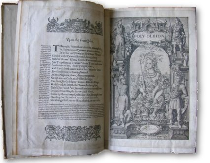

Sunday, May the 30th, 2010
back to: title, date or indexes
I have not yet borrowed a copy of Michael Drayton's Poly-Olbion from the London Library, but I will do so shortly. Could this exceedingly lengthy work become a Hooting Yard On The Air Christmas Special, a broadcast I suspect would be longer than the three hours devoted to Christopher Smart's Jubilate Agno? We shall see…
Meanwhile, here is the title page of the copy held by Warwickshire County Council:
